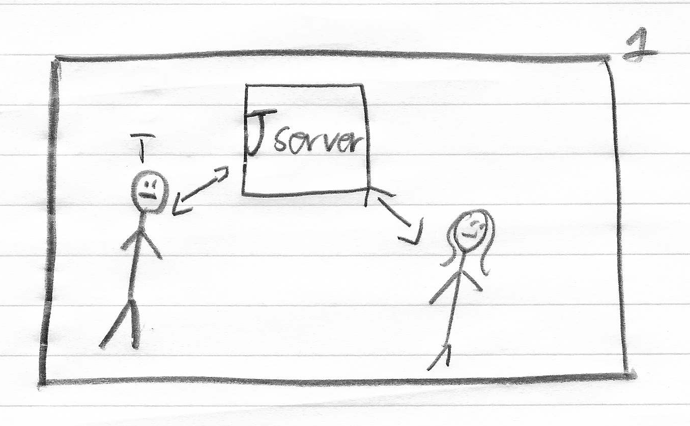
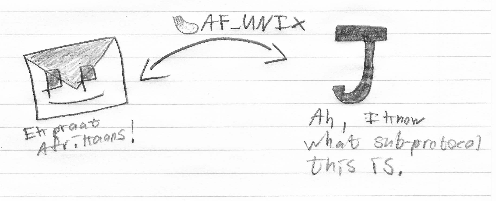
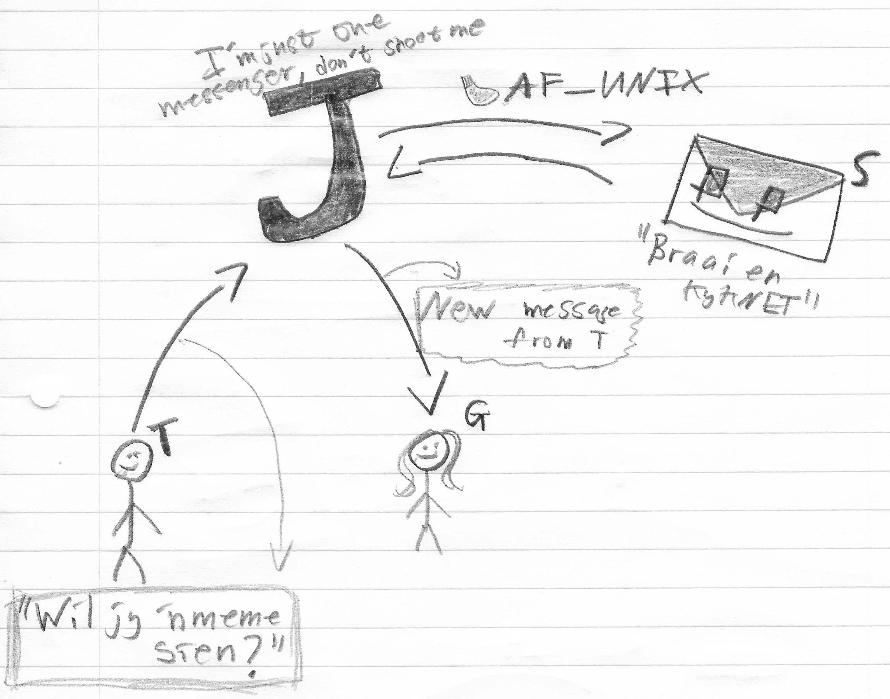

Tristan B. Kildaire
"My brain is big but I still failed Applied 144 for the
second time" ~Deavmi 2020
Bester: A pluggable message-exchange protocol (Part 1)
20th April 2020
Introduction
I had enough time, during lockdown, to actually start on some of
the ideas I had been wanting to start on for quite some time. I
had an idea of something along the lines of XMPP but more generalised.
Now I say it in italics because XMPP can actually and is used in a
general sense, like for IoT devices - atleast one of the available
XMPP daemons, I believe ejabberd, advertised itself as that once.
For me though I wanted my own version and I guess as simple as
possible - once again I have not read the XMPP specification so I
think I might just be on par with it. Anyways, the point is I
wanted my own version of it, now... what is it?
A worked example to explain it
So the idea behind the bester protocol is that by itself it is
pretty useless except for a few built-in commands for admin but
those don't really do anything. The idea behind bester is
that two users let's call them G and T, because Alice and Bob is
overused (and Eve is the weird dude that hangs out in NARGA H in
the evenings). So we have a user named G and a user named
T, G is connected to server J and so is T
(as shown below):

Now let's say that G and T both
have some sort of protocol they know how to speak, perhaps it's
Afrikaans. Now, if T wants to send something encoded in
the Afrikaans protocol, to G, then you would
expect, in such a server-client model, for the server, J,
itself to understand what the protocol is too! This is
where the difference with bester comes in, as compared to say now
using WhatsApp. In the WhatsApp scenario, that server J,
would also need to understand the Afrikaans protocol. With
bester, the server doesn't need to understand it but
there must be something then surely that does? Say hello to the message
handler!
Every message that follows the bester protocol must
include a type field, this indicates to the server, J,
which sub-protocol this message is encoded with and to which messgage
handler the message should be dispatched to. In this case we
can call the little message handler, S (this one's pretty
ambigious). When J was setup, the server administrator
made sure that his bester server could handle Afrikaans messages
so therefore the server J will forward the message sent
from T to J. The handler can do really anything it
wants in its own space, it runs as a seperate process and
communicates with the server over local IPC via a UNIX domain
socket.

Once the processing is done by the message handler
S, then
there are a few things that can happen. One for sure is that
S
must send s response, back to
J who is waiting for one.
This response contains a few built-in commands that can tell the
server,
J, what to do with the message that
S
created in reply to
J passing on the
Afrikaans
message from
T to it. These commands basically boil down
to whether the generated message (by
S) should be sent
back to clients connected to the server
J or if it should
be sent to other servers (we will get to this in a moment).
So the idea is that J will receive messages and send back
replies to either clients or forward to another server (not
discusses yet). The fact that T was able to get the server
to send the message encoded in the Afrikaans protocol
wasn't because the server J understood Afrikaans
but rather because it knows two built-in commands sendClients
and sendServers which are for sending the payload
generated by the message handler for Afrikaans, S.
S would have seen that within the Afrikaans protocol
(because it understands it just like T and G do)
there is a field that says who the message must be sent to and
because of this, S can process the message it received,
generate a new one (a response) and command the server J
(who can't speak or understand Afrikaans) to use the sendClients
command to forward it to the correct client attached to the local
server J, in this case, client G.
So to make it clear, all the server knows is how to receive
messages from clients, where to process them (done by the message
handler), and then two commands that can be used by the message
handler's generated message to command the server where to send
its generated response.

For now that is all, I will be writing on how server-to-server (so
think sendServers) communication works and with a worked
example too, in the next blog post.
Want to find out more? Here is the GitHub repo.